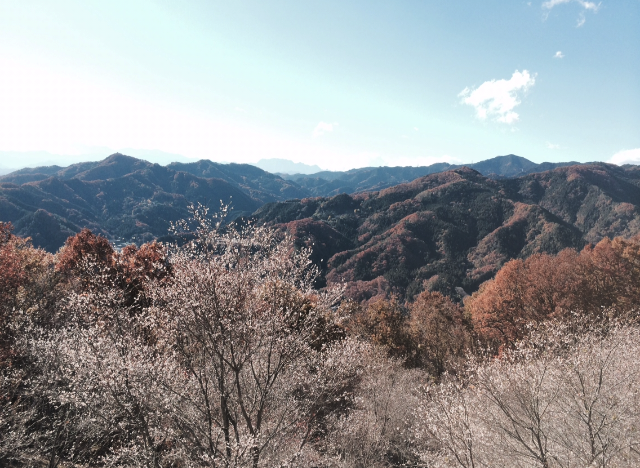

Day Trips

Hitachi Kaihin National Park in Ibaraki Prefecture, famous for their nemophila fields in May. About a 2 hour drive from Tokyo with plenty of other beautiful gardens and fields throughout the park.
Kamakura is an hour drive away from Tokyo. There are beaches where many surfers go and many Buddhist temples in the area, as well as great food.

Chichibu is a beautiful country and mountain side town about 2 hours by train from Tokyo in Saitama Prefecture. There are many beautiful hikes and natural views here.